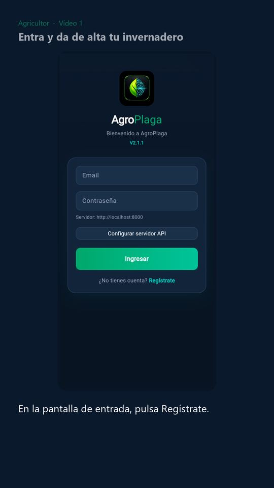
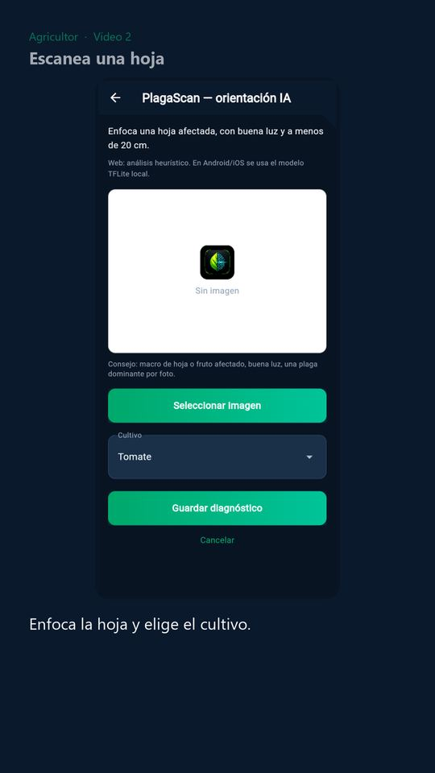
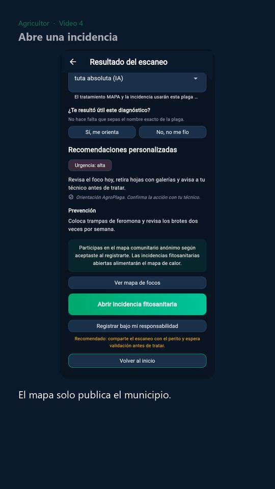
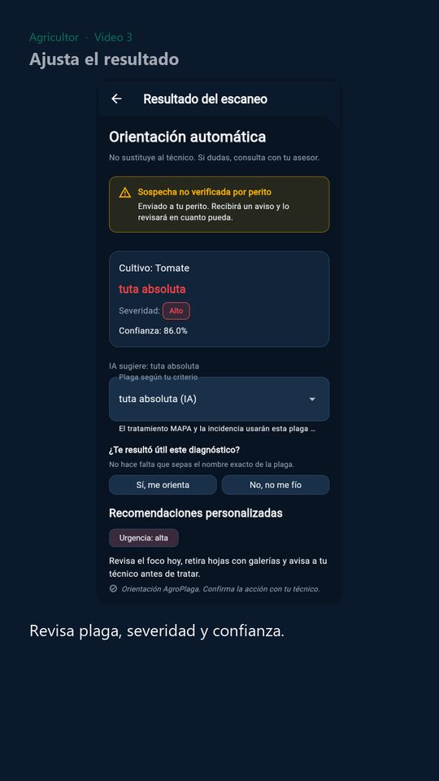
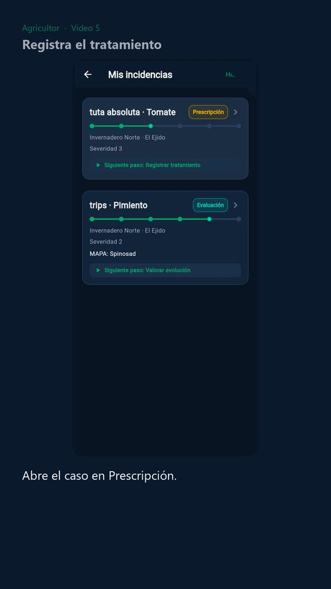
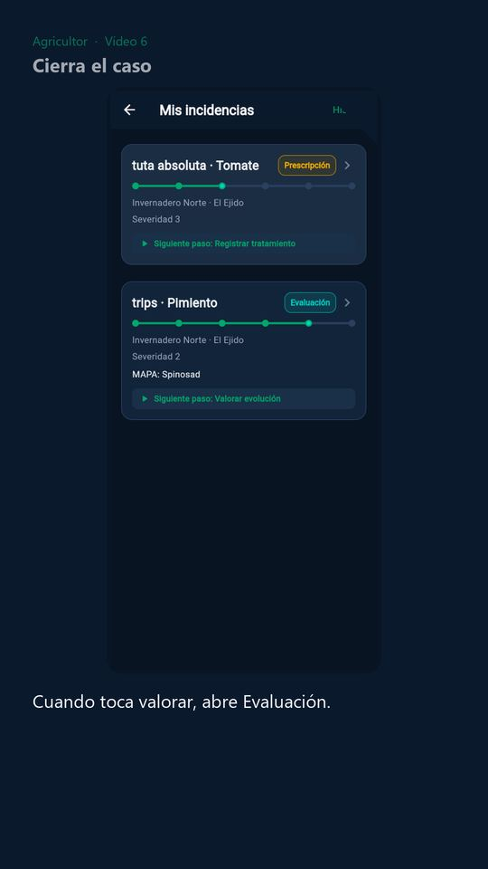
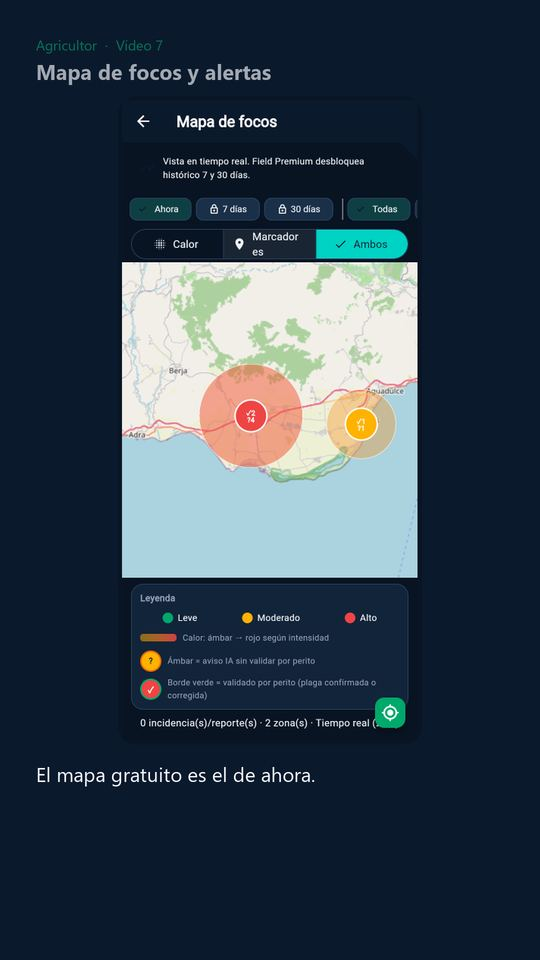
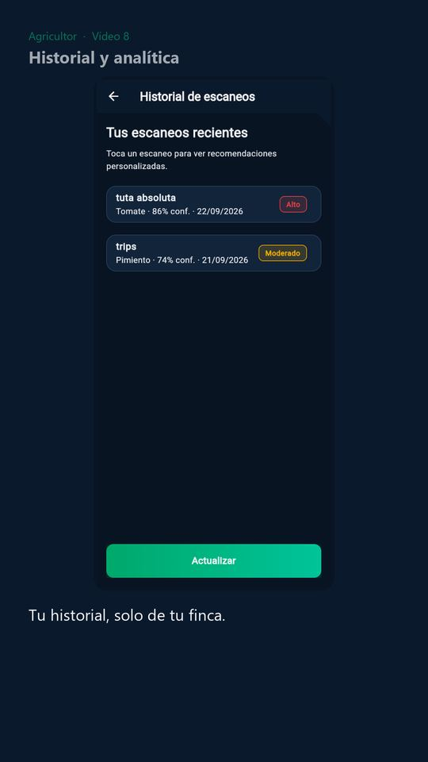

Entra y da de alta tu invernadero
Cuenta del piloto, mapa comunitario y el alta de la finca. El código SIGPAC puede esperar.
Agricultor
Vídeos cortos para usar la app. La inteligencia orienta: no es un diagnóstico y no sustituye a tu técnico.
Empieza por los tres primeros. El resto, cuando llegues a esa pantalla. Aquí irán también las guías que publiquemos después.

Cuenta del piloto, mapa comunitario y el alta de la finca. El código SIGPAC puede esperar.

Enfoca a unos 20 cm. En el móvil el botón es Tomar foto y la orientación se calcula sin internet.

El foco entra en el mapa del municipio. No se publica ni tu nombre ni la parcela.

Revisa la plaga y la severidad. Si quieres que el técnico vea la foto, márcalo antes de guardar.

Elige un producto autorizado, confirma la dosis y activa la carencia.

Compara con una foto nueva. Si hay mejora, ciérralo: el foco sale del mapa.

El mapa gratuito es el de ahora. El histórico de 7 y 30 días es Field Premium.

Tus escaneos y el resumen de tu campaña. No salen de tu explotación.